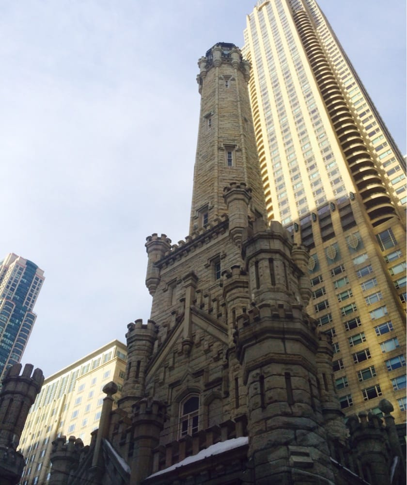
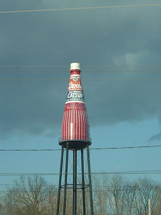

Water Towers - Historical and Art
Niles, Illinois Leaning Tower
Illinois has a miniature Leaning Tower of Pisa, a utility tower used to store water, also a bell tower. The water tower fills the YMCA pools.
Built in 1869, this is the water tower that along with it's pump station survived the great Chicago Fire.
Collinsville, Illinois Leaning Tower
Pop Art
In the sixties, work that turned soup cans into art, giant tubes of lipstick into lipschtick, and comic strips into art. This water tower in Collinsville, Illinois, supplies water to the catsup making factory.
